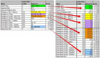

 Если у вас есть таблица Excel, в которой, в определённом столбце, через запятую перечислены значения (или диапазоны значений), а вы хотите получить аналогичную таблицу, но чтобы в каждой строке было только одно значение, - то вам на помощь придёт функция ExtendArray. (пример работы функции можно увидеть на прикреплённом изображении) В своей работе ExtendArray использует функцию ArrayOfValues и функцию TransposeArray Function ExtendArray(ByVal arr, ByVal ColumnForExtend As Long) As Variant ' принимает в качестве параметров: ' двумерный массив arr, и номер столбца ColumnForExtend, содержащего список значений ' Возвращает двумерный массив (возможно, с большим количеством строк), ' в котором все строки содержат в столбце ColumnForExtend только одно значение ' индексы всех массивов начинаются с единицы (Option Base 1) ColumnsCount% = UBound(arr, 2) - LBound(arr, 2) + 1 If ColumnForExtend > ColumnsCount% Or ColumnForExtend < 1 Then MsgBox "В массиве нет столбца с номером " & ColumnForExtend, vbCritical, "Ошибка": End End If
' формируем временный столбец из 1 столбца ReDim tmpArr(1 To ColumnsCount%, 1 To 1)
For i = LBound(arr) To UBound(arr) ' перебираем все строки исходного массива ' перебираем все значения в заданном столбце For Each v In ArrayOfValues(arr(i, ColumnForExtend)) ' формируем новую запись (столбец) во временном массиве For j = LBound(arr, 2) To UBound(arr, 2) tmpArr(j, UBound(tmpArr, 2)) = arr(i, j) Next j ' вместо списка значений поставляем очередное значение tmpArr(ColumnForExtend, UBound(tmpArr, 2)) = v ' добавляем дополнительный столбец к временному массиву ReDim Preserve tmpArr(1 To ColumnsCount%, 1 To UBound(tmpArr, 2) + 1) Next v Next i ' удаляем лишний столбец On Error Resume Next: ReDim Preserve tmpArr(1 To ColumnsCount%, 1 To UBound(tmpArr, 2) - 1) ' транспонируем временный массив, и возвращаем результат ExtendArray = TransposeArray(tmpArr) End Function Функция нашла применение в программе выгрузки тарифов в XML - там вы можете посмотреть её в работе.
|